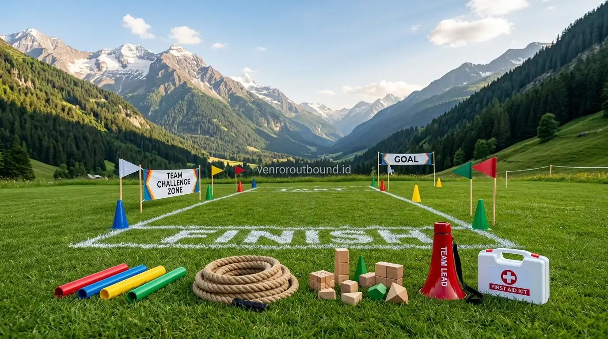

1. Mengapa Sekolah Membutuhkan Mitra Outbound yang Mengerti Karakter?
Jawaban singkat: Kami menyediakan jasa outbound karakter sekolah dengan trainer berpengalaman yang memahami psikologi perkembangan remaja. Fokus utama kami adalah membentuk disiplin, kerja sama, dan sopan santun peserta didik melalui skema paket outbound sekolah yang terstruktur, aman, serta didampingi tim medis lapangan berstandar di kawasan Mojokerto dan Malang.
Bagi yayasan pendidikan, kepala sekolah, dan dewan guru, agenda kegiatan luar ruang bukan semata-mata rekreasi bermain. Kegiatan tersebut merupakan perpanjangan dari proses pendidikan moral di lingkungan sekolah. Ketika memilih penyedia jasa outbound, tantangan terbesar pihak sekolah adalah menemukan mitra yang tidak hanya menyediakan permainan fisik, melainkan mampu menanamkan nilai-nilai luhur seperti integritas, rasa hormat, tenggang rasa, dan ketangguhan pribadi.
Vendor Outbound memposisikan diri sebagai partner strategis sekolah di wilayah Mojokerto (Pacet, Trawas) dan Malang (Kota Batu, Pujon). Kami menghadirkan program *character building* yang dirancang secara sistematis agar setiap simulasi permainan memiliki benang merah edukatif yang relevan dengan kebutuhan tumbuh kembang peserta didik.

Pentingnya Melatih Leadership Sejak Bangku Sekolah Menengah
Ulasan pembentukan jiwa kepemimpinan pelajar melalui media simulasi outdoor terarah.
2. Pilar Layanan Outbound Karakter Pelajar
Program outbound sekolah kami diarahkan pada penguatan kompetensi sosial emosional siswa melalui pendekatan terpadu:
- Character Building Berkelanjutan: Menumbuhkan sikap disiplin terhadap waktu, rasa tanggung jawab atas tugas individu, serta kebiasaan menjaga adab dan etika kesopanan.
- Simulasi Team Building & Gotong Royong: Melatih peserta untuk saling membantu, menyingkirkan sekat pergaulan antarkelompok (*geng*), dan membangun kebersamaan yang inklusif.
- LDKS & Kepemimpinan Muda: Mengasah daya inisiatif calon pengurus OSIS dan organisasi sekolah dalam mengambil keputusan di situasi dinamis.
- Komunikasi Efektif Antar-Siswa: Membiasakan siswa menyampaikan pandangan secara santun serta mendengarkan instruksi rekan setim dengan penuh perhatian.

Peralatan simulasi pembentukan karakter dan rintangan kerja sama tim yang dipersiapkan dengan rapi dan aman.
3. Alur Koordinasi Profesional yang Ramah Guru dan Panitia
Kami menyadari kesibukan para pendidik dalam menjalankan kegiatan belajar mengajar harian. Oleh karena itu, skema kerja sama kami susun secara transparan dan terstruktur dalam 4 tahap koordinasi:
Tahap 1: Asesmen Kebutuhan & Tujuan Kesiswaan
Konsultasi awal untuk memetakan latar belakang siswa, fokus tema yang ingin dicapai (misal: kedisiplinan, integrasi siswa baru, atau LDKS), rentang usia, serta durasi yang direncanakan.
Tahap 2: Penyusunan Desain Modul & Draf Rundown
Penyusunan jadwal yang seimbang antara simulasi aktif, waktu istirahat ibadah, dan sesi refleksi, lengkap dengan rincian kebutuhan logistik dan akomodasi.
Tahap 3: Eksekusi Lapangan & Manajemen Keselamatan
Fasilitator memandu dinamika kegiatan dengan pendekatan psikologis positif, didukung kesiapan tim medis stand-by dan pendampingan bersama guru.
Tahap 4: Evaluasi & Laporan Pertanggungjawaban
Penyampaian catatan observasi perkembangan dinamika peserta serta dokumentasi foto/video untuk kebutuhan laporan komite dan arsip sekolah.

Menyusun Rundown Outbound Sekolah 2 Hari 1 Malam yang Efektif dan Seru
Contoh matriks jadwal 2D1N yang memadukan rekreasi, character building, dan kontrol guru.
4. Standar Protokol Keamanan dan Manajemen Medis di Lapangan
Keselamatan peserta adalah prioritas yang tidak dapat ditawar dalam setiap penyelenggaraan outbound sekolah. Kami menerapkan serangkaian prosedur operasional standar:
- Pemeriksaan Kelayakan Alat & Lokasi: Seluruh area lapangan dan peralatan simulasi diperiksa sebelum siswa memasuki arena.
- Kesiapsiagaan Pos P3K: Petugas P3K siaga di lokasi dengan perlengkapan obat-obatan pertolongan pertama dan pemantauan kondisi hidrasi siswa.
- Akses Rujukan Medis: Koordinasi dengan fasilitas kesehatan atau klinik terdekat dari lokasi venue untuk mengantisipasi kebutuhan rujukan segera.
- Penyesuaian Beban Fisik: Tingkat intensitas tantangan selalu dimodifikasi secara fleksibel sesuai dengan kondisi cuaca dan kebugaran peserta didik.

Paket Outbound Sekolah Karakter Edukatif & Terlengkap 2026
Informasi paket all-in, rincian biaya komite, dan modul kurikulum karakter terpadu.
5. Pilihan Lokasi Edukatif di Mojokerto & Malang
Kawasan Jawa Timur memiliki potensi bentang alam yang sangat kondusif untuk pembelajaran luar ruang:
- Mojokerto (Pacet & Trawas): Menyajikan suasana pegunungan yang asri dengan latar Gunung Welirang dan Penanggungan, dekat dengan sumber mata air alami dan hutan pinus yang tenang.
- Malang Raya (Kota Batu & Pujon): Menyediakan berbagai resort edukasi, lahan perkemahan berhawa sejuk, serta kemudahan fasilitas akomodasi yang sangat ramah untuk rombongan pelajar.
Rencanakan Kegiatan Karakter Sekolah Anda
Diskusikan rencana kegiatan tahunan sekolah Anda via WA di +62 82211221909. Kami siap membantu menyusun proposal resmi, estimasi anggaran terperinci, serta modul kegiatan yang tepat guna.
Hubungi Kami via WhatsApp6. Kesimpulan
Memilih penyedia jasa outbound karakter sekolah adalah langkah penting untuk menjamin pengalaman belajar luar ruang yang aman, berkesan, dan berdampak positif bagi akhlak siswa. Dengan perencanaan matang, fasilitator yang komunikatif, serta kesiapsiagaan keselamatan di wilayah Mojokerto dan Malang, Vendor Outbound siap menjadi mitra terpercaya bagi kemajuan institusi pendidikan Anda.
Pertanyaan Sering Diajukan (FAQ)

Arby Ardiansyah
Arby Ardiansyah adalah praktisi pengembangan program dan penyusun konten edukasi luar ruang di Vendor Outbound, berfokus pada perancangan simulasi kepemimpinan, dinamika kelompok, dan penguatan karakter peserta didik di lingkungan pendidikan.